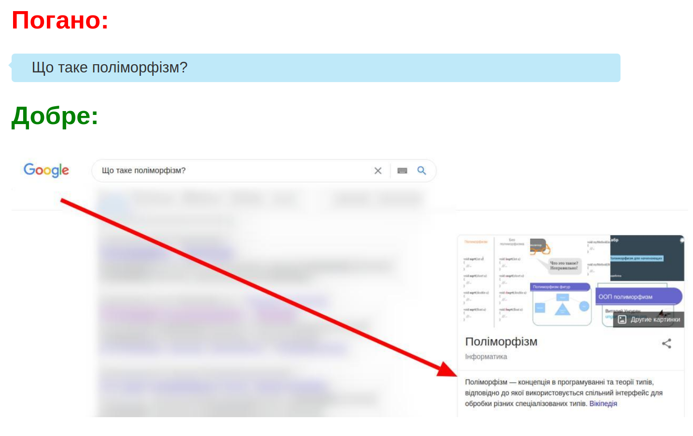

Будь ласка, навчіться ґуглити!
Не задавайте в чатах/форумах питання типу:
Навіщо потрібне наслідування?
Чому небо синє?
Що таке поліморфізм?
Такі питання можна потрібно в першу чергу ґуглити!
Ґуглити значить:
- Відкрити Google (або іншу пошукову систему)
- Ввести запит.
- Я розумію, але що поганого в тому, що я задаю такі питання в чатах/на форумах?
- Повірте, 99% ваших питань давно хтось задавав в інтернеті, на форумах. Це означає, що відповідь знаходиться в інтернеті. Тому, задай своє питання ґуглу або іншій пошуковій системі ви не тільки швидко отримаєте відповідь, а й також не будете турбувати інших людей
- Отже, задавати питання в чатах/форумах заборонено/неетично/погано?
Не зовсім. Якщо у вас виникло питання, спочатку проґугліть його, а потім, якщо ви не знайшли відповіді, можете пошукати в DuckDuckGo задати своє питання в чатах/форумах.
Суть однією картинкою:
